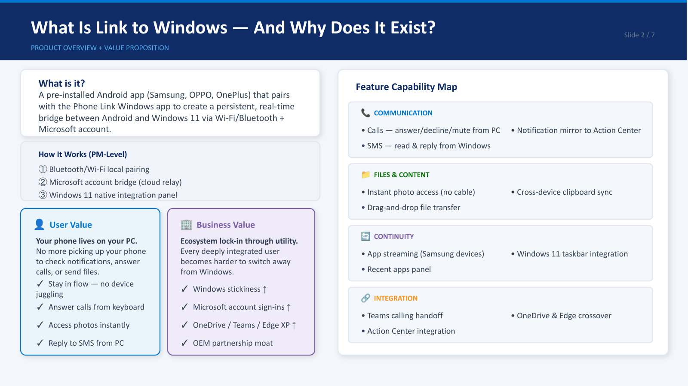
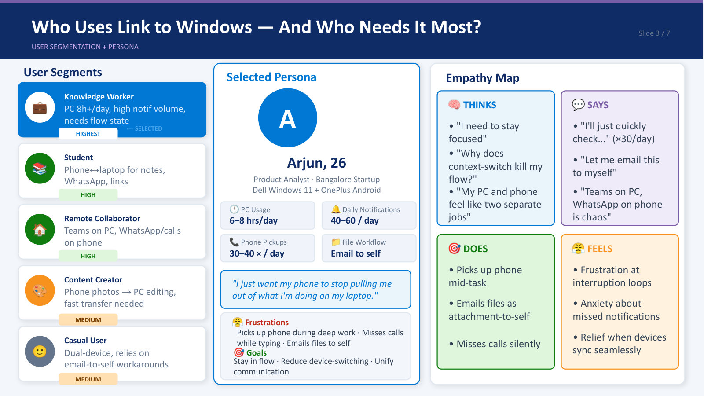
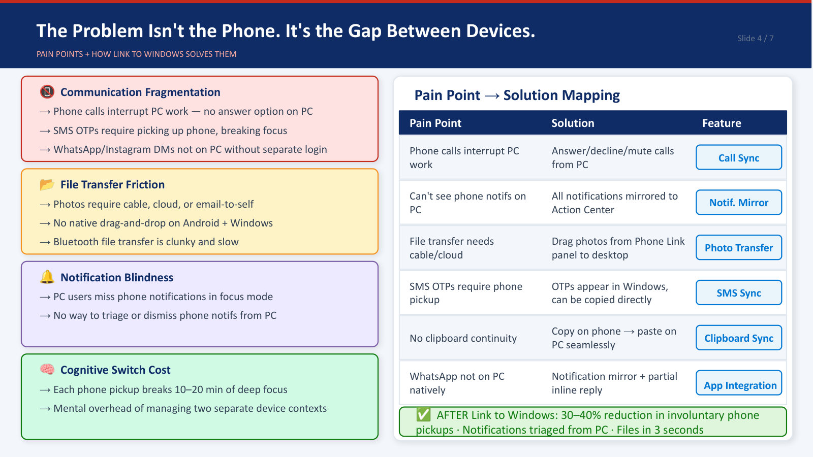
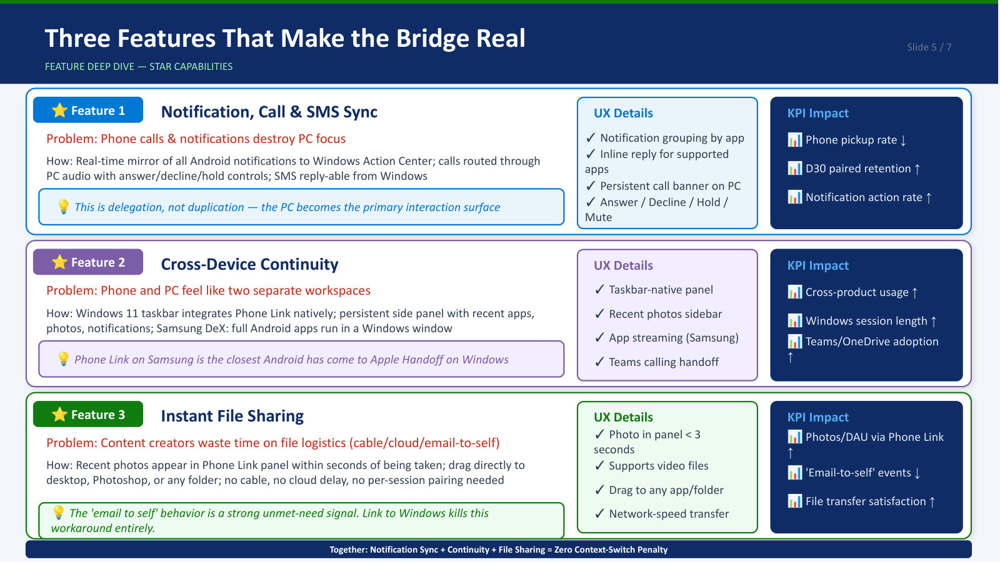
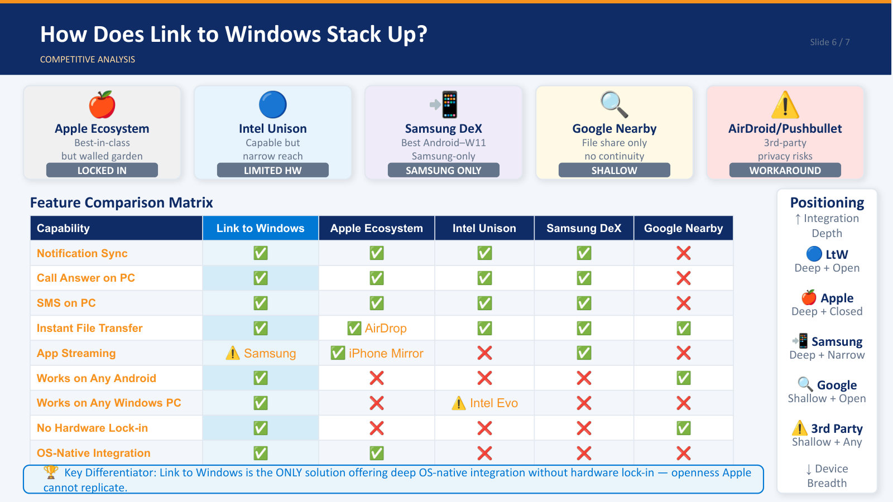
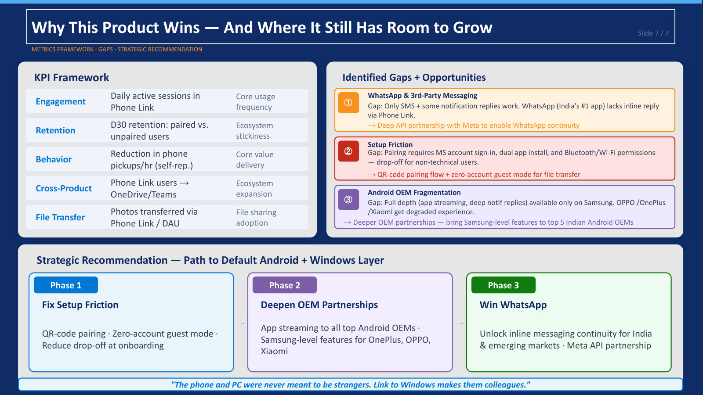

Teardown · Microsoft · Consumer
Link to Windows: the invisible bridge between phone and PC
My favourite product, taken apart: how Link to Windows cuts context switching, builds ecosystem lock-in through plain utility, and where it still has room to grow.
The problem
People who work across a phone and a PC lose focus constantly: missed notifications, awkward file transfers, and phone pickups that break their flow. The problem isn't the phone. It's the gap between devices.
Why it matters to Microsoft
The goal is not another standalone app. It's to make the phone and PC one continuous workspace, which raises Windows stickiness, Microsoft account sign-ins and use of Teams, OneDrive and Edge. Every deeply connected user is harder to switch away from Windows.
Who it's for
Knowledge workers · the priority segment
On a PC eight or more hours a day with a high volume of notifications. They need to stay in flow, so every avoided phone pickup is the value.
Students and remote collaborators
Constantly moving between phone and laptop for notes, files and messages.
The solution, ranked by context switches saved
- Notification, call and SMS sync: answer calls and reply to messages and OTPs without touching the phone.
- Universal clipboard and app mirroring: copy on one device, paste on the other; run phone apps on the PC.
- Instant file sharing: photos and files across, no cable.
Key user flow
- PairPhone and PC link through a Microsoft account
- NotifyPhone notifications appear on Windows instantly
- RespondTake calls and reply to SMS from the keyboard
- TransferMove photos and files without a cable
- Stay in flowNo need to reach for the phone
The deck
Overview and value proposition, segments, pain points, the three star features, a competitive matrix and the metrics framework.







How it stacks up
Link to Windows is the only option with deep, OS-native integration and no hardware lock-in, an openness Apple can't copy.
| Option | Strength | Limit |
|---|---|---|
| Link to Windows | Deep integration, any Android, any Windows PC | App streaming only on Samsung |
| Apple ecosystem | Best in class | Walled garden: iPhone and Mac only |
| Samsung DeX | Best Android-to-Windows experience | Samsung phones only |
| Intel Unison | Capable | Needs specific Intel hardware |
| Google Nearby Share | Works across devices | File sharing only, no continuity |
| AirDroid, Pushbullet | Works anywhere | Third-party workarounds with privacy risk |
How to measure it
| Area | Metric | What it tells you |
|---|---|---|
| Behaviour (headline) | Phone pickups per hour, target: down | Whether the core value is delivered |
| Retention | D30 retention, paired vs unpaired users | Ecosystem stickiness |
| Engagement | Daily active sessions; notification action rate | How often people rely on it |
| Adoption | Photos and files transferred per daily user | File-sharing pull |
| Ecosystem | Phone Link users who go on to use Teams, OneDrive, Edge | The business payoff |
Gaps, and the path to becoming the default
- WhatsApp: India's most used app has no inline reply through Phone Link. Fix: a deep API partnership with Meta.
- Setup friction: a Microsoft account, two app installs and Bluetooth/Wi-Fi permissions lose non-technical users. Fix: QR-code pairing and a no-account guest mode for file transfer.
- OEM fragmentation: full depth only on Samsung; OnePlus, OPPO and Xiaomi get less. Fix: bring Samsung-level features to the top five Indian Android brands.
- Phase 1 · Fix setupQR pairing, guest mode, less onboarding drop-off
- Phase 2 · Deepen OEMsApp streaming beyond Samsung
- Phase 3 · Win WhatsAppContinuity for the messaging app that matters most in India
Skills this shows
- Problem framing
- User segmentation
- Feature prioritisation
- Competitive analysis
- Telemetry and success metrics
- Risk and gap analysis